- Portfolio
- Design
Wing 06 · The plate section
Design
Identity, interface and image. This was the whole of the old site; here it is one discipline among seven — which is a more accurate picture of the work than it was.
4 projects
3 showcase · 1 prototype
Identity · Visualization · Staging
2024–26
01 Work
Client work is shown without performance claims. Where a project was commercial, the outcome belonged to the client and was never mine to measure or publish.
02 Virtual staging, before and after
Six properties across Louisiana and Texas. Each was staged in more than one direction, so an agent could pick the read that matched the buyer rather than accept one interpretation of the room.
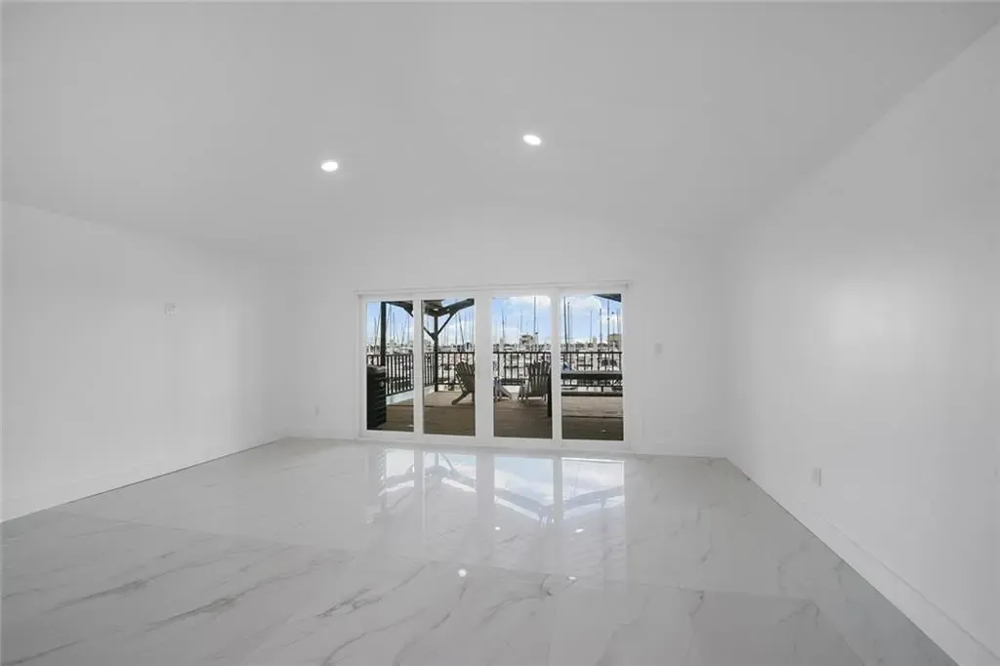
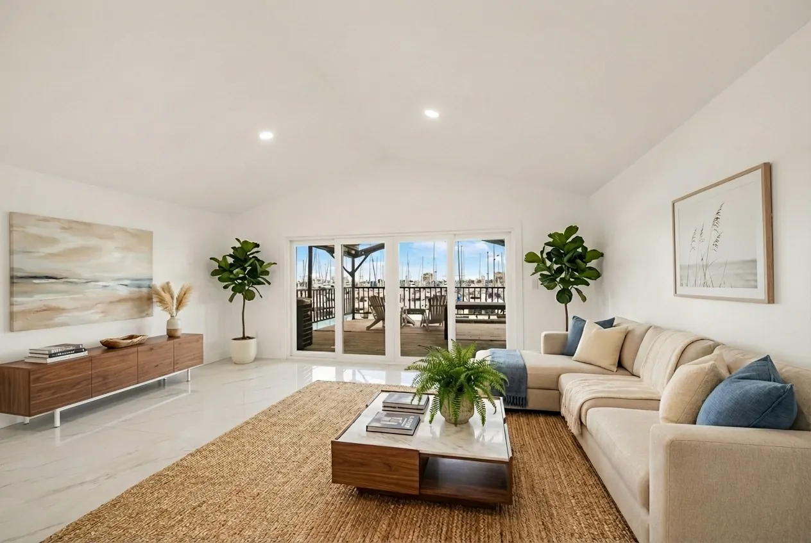
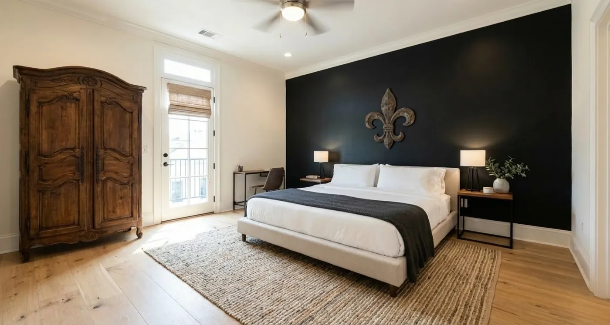
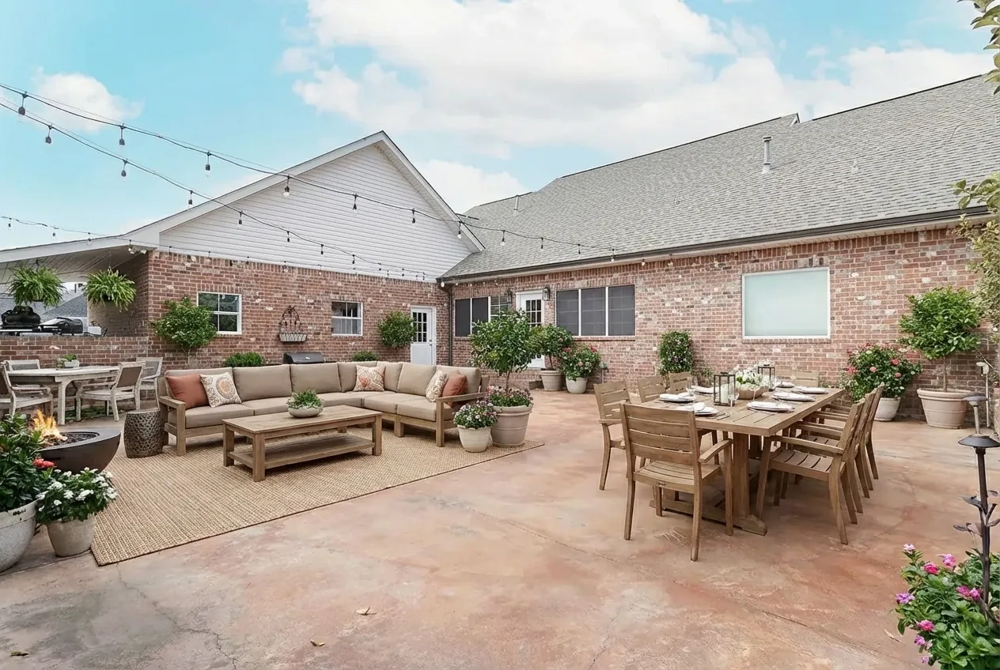
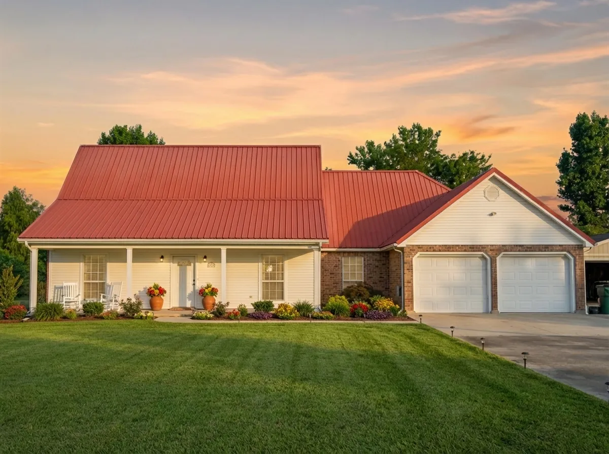
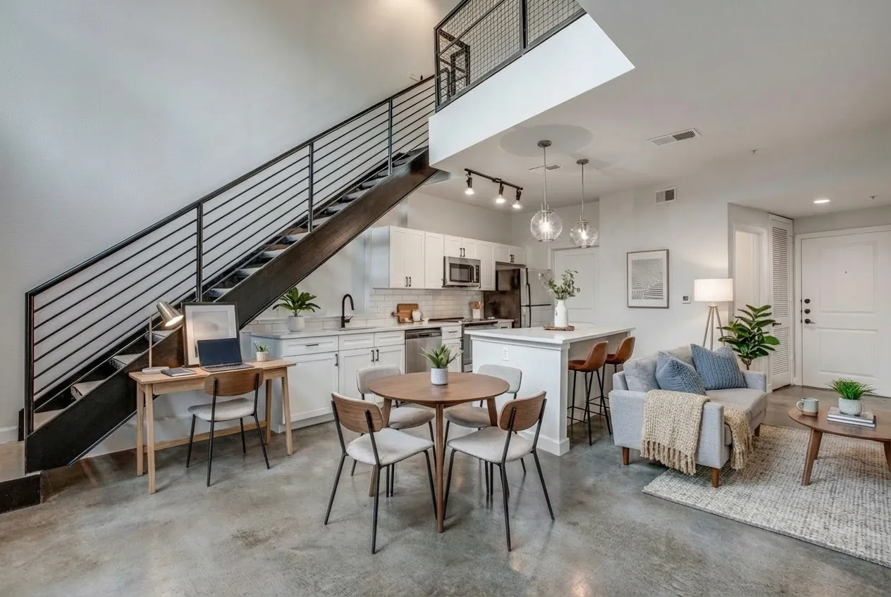
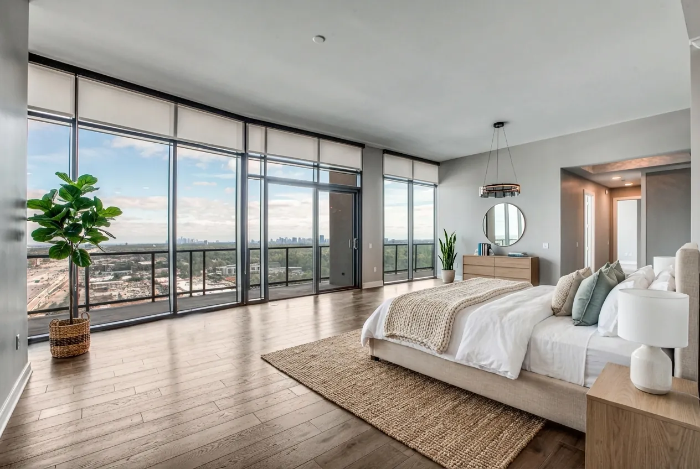
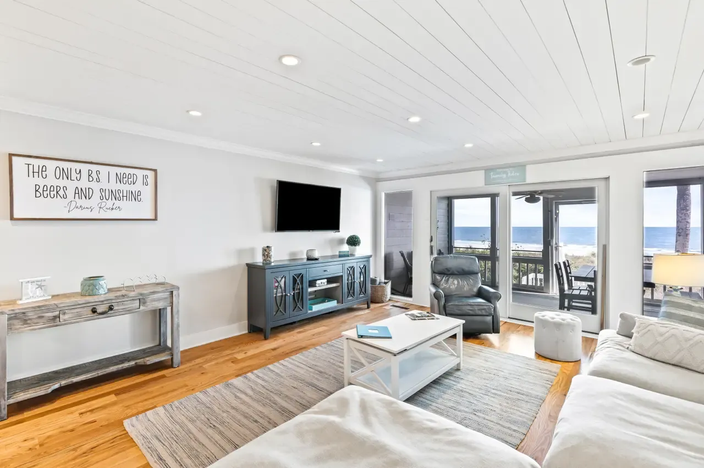
03 Jewellery
The constraint in jewellery imagery is that the stone has to survive the crop. Facet, metal and setting all read differently at thumbnail size than they do at full width, and a piece that looks correct in one will often look wrong in the other.
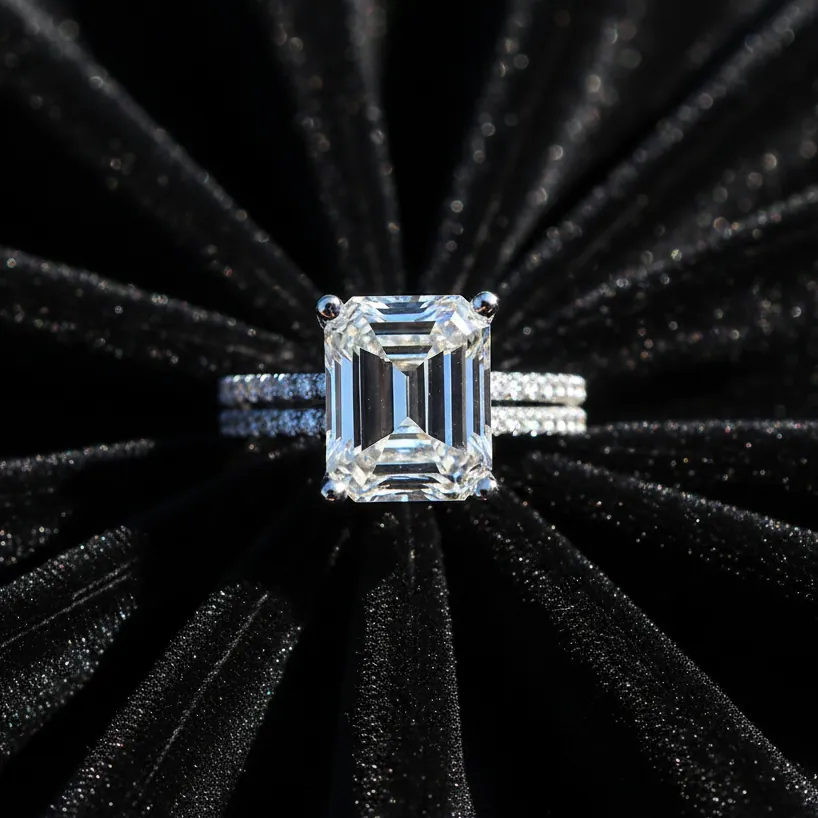
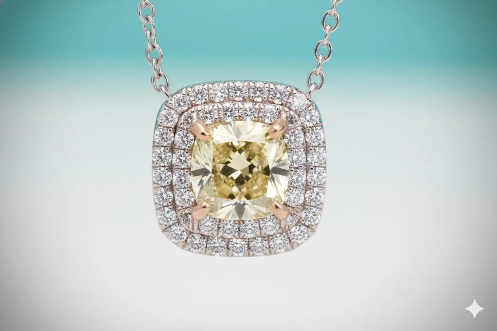
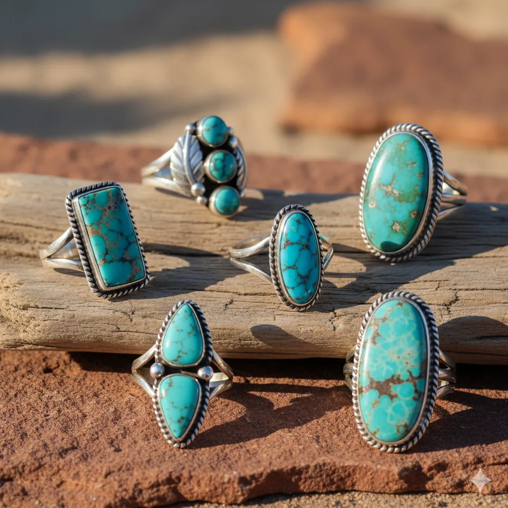
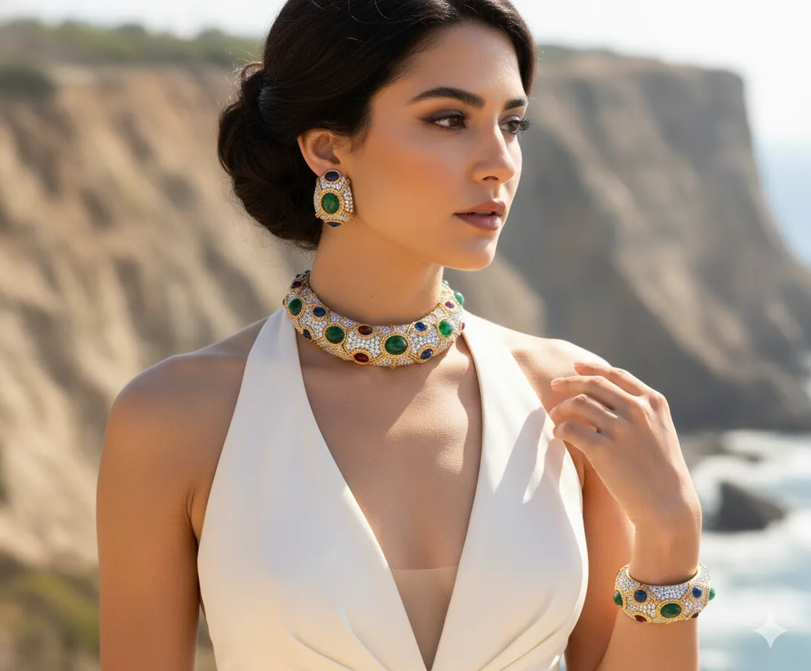
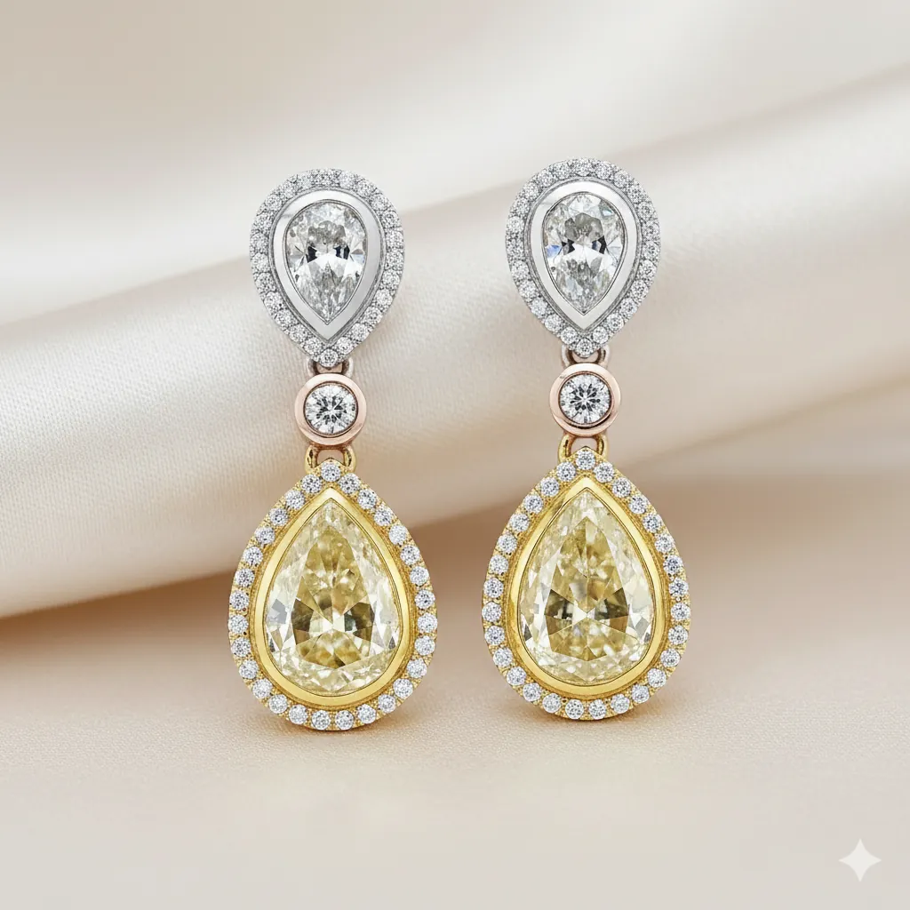
04 Archive
This site previously ran as a jewellery and virtual-staging services studio. Those pages
are kept at /archive/ for reference. They are not linked from the
navigation and are marked noindex; several of them carry performance figures
and testimonials that cannot be substantiated, which is why the work has been brought
forward here without them.